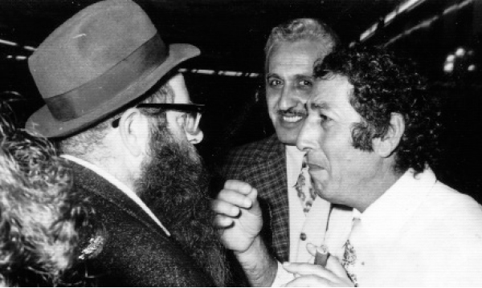

True Zealousness in Reaching Every Jew
If you want to be a zealot, be zealous about yourself !

In shlichus, and in any encounter with a Jew who is not yet religious, we need to be careful not to look at the cup as being half empty. We need to seek out the good and praise the person.
A long letter from the year 5715 was recently published, in which the Rebbe responds to those who complained about inviting representatives from the Zionist Israeli government to the Yud-Tes Kislev farbrengen in Kfar Chabad. The Rebbe says every Jew should be welcomed graciously. Likewise, the Rebbe pointed out how those “Zionist representatives” helped make the spread of Torah and mitzvos possible.
CHASSIDIC ZEALOUSNESS
R’ Reuven Dunin a”h once told how he learned how to use the trait of zealousness as the Rebbe wishes. This is the story he told:
Many decades ago, there was a person in B’nei Brak who, in his influential public position, did all he could to oppose Chassidus and the ways of Chassidus. He publicly opposed Lag B’Omer parades and the Rebbe’s efforts for shleimus ha’aretz, etc. This was all written about in the newspapers and things got worse from year to year.
When R’ Dunin realized that this person was committed to continuously opposing the Rebbe, he decided he would go to B’nei Brak and take action. He spent a long time planning for the big day, and as time passed, his feelings of zealousness for the Rebbe and Chassidus continued to grow.
The time came when he felt it was time to make his move. Right after Shacharis, as he left his house, he noticed something in the mail box. It was a familiar envelope. A sicha had come from the Rebbe, which was the system at the time, that subscribers received the latest sicha in the mail. He opened the envelope and began reading the sicha. The Rebbe explained at length how great Pinchas was, for he saved the Jewish people with his trait of zealousness. R’ Dunin continued reading as he stood there on the stairs, ready to head off to commit his own act of zealousness.
The more he read, the greater his feeling of zealousness. After all, he was reading the Rebbe’s lengthy explanation about Pinchas’ great spiritual level. He thought how wonderful it was that just that day, as he was about to set out to take action, this sicha had arrived. It was only when he got to the end of the sicha that he read that the Rebbe said this trait of zealousness needs to be used against a person’s own bad traits and not against another Jew. Then and there, R’ Dunin understood that the Rebbe was directing him to refrain from taking any zealous measures.
As a loyal soldier of the Rebbe, he went back inside. He set aside his zealousness and continued conducting himself with tremendous Ahavas Yisroel for every Jew.
INSTEAD OF FIGHTING – LOVING
R’ Aharon Shiffman, shliach in Kibbutz Farod relates:
“At the kibbutz, there is usually no opposition to our activities and no need for arguments. However, sometimes, a difficulty arises and you need to think about how to handle it properly. For example, before Lag B’Omer, I went with two young helpers to hang flyers about the parade. A member of the kibbutz came over and said he was the security officer and he forbade us from hanging signs. ‘In any case, all the signs will come down in a few minutes.’ He pointed at the entrance to the kibbutz and asked us to leave as soon as possible.
One of the young people with me began to argue with him, ‘Who are you anyway? You’re not in charge …’ but I took the other approach. I put my arm warmly on the officer’s shoulder and said, ‘What’s your name?’ I immediately followed this with, ‘My name is Aharon and we can shake hands.’ In a calm voice I explained that we hadn’t come to make trouble. We were doing this for the kids. Lag B’Omer was coming and we were planning a fun, educational program for the children. I then asked him where he suggested we hang the flyers.
With this approach, he softened right away and even helped us put up the signs. The parade was very successful and was written up in a very flattering manner in the national kibbutz newspaper under the headline, “Kibbutz Farod – Culture and Holidays under the auspices of Chabad.” Under the headline were a few lines which said, “Who organized the Lag B’Omer festivities for the children of Kibbutz Farod? Chabad Chassidim. Previously, the Chassidim also organized a Purim feast and a Pesach seder at the kibbutz. The administration of the kibbutz says these activities do not interfere …”
PSYCHOLOGICAL APPROACH
I once attended a meeting of the entire staff of a Chabad school to discuss a certain bachur whose behavior was extremely problematic. He was generally a good bachur and he had a positive influence on others, but he had an emotional problem. He was seeing a psychologist, but occasionally he would get into extreme confrontations with the staff.
At this meeting, all the participants agreed the situation was intolerable. They had given the bachur enough warnings and punishments and the time had come to expel him. Each one explained how difficult it was to teach in the presence of this bachur and there was not one advocate to speak on his behalf.
Then the psychologist was given a chance to speak. He said, “From everything that I have heard, I understand that this is a talented, diligent bachur, who works on his middos and observes most rules of Chassidic conduct. On the other hand, there is a problem of discipline and respect. By focusing on his negative qualities, you are intensifying and perpetuating them. This is a mistake! This perspective will also convince the bachur himself that he is no good and incorrigible. You need to focus on his good qualities, and strengthen them so they will serve as a counter-balance to all the negative manifestations until the positive will overcome and vanquish the negative side.”
The road wasn’t easy or quick but the psychologist’s counsel was accepted unanimously, at least on a trial basis. In the end, the bachur did improve. He moved through the system, married, and is a dynamic and beloved shliach today.
PINCHAS, THE BAAL SHEM TOV’S CHILDHOOD FRIEND
When the Baal Shem Tov was a little boy, he had a friend named Pinchas. Yisroel and Pinchas would play together in the streets of the village.
One day, they discovered a fun game with a pail and rope. There were two pails on a pulley and when one pail was up, the other pail went down the well. The children got into the two pails and played, one going up while the other went down.
At a certain point, Pinchas grew tired of the game and without prior warning he got out of the pail when he was on top. This left Yisroel in the pail down below in the well, without the ability to get himself up. Yisroel called out, “Pinchas, Pinchas!” But his friend had departed. It was only later on, when a man came to draw water and he found it hard, for some reason, to bring up the pail from down below, that he saw a boy sitting in the pail. He shouted at Yisroel who went home in disgrace.
Some time later, Yisroel met up with Pinchas and wanted to tell him a thing or two. “Your name is Pinchas and I want to ask you a question. At the end of the book of BaMidbar there are five parshiyos: Chukas, Balak, Pinchas, Mattos and Massei. Chukas and Balak and sometimes joined and sometimes read separately. The same is true for Mattos and Massei. How come Pinchas is never read together with another parsha?”
Pinchas did not know what to say and Yisroel said, “Pinchas does not join with any parsha because it is hard to be a friend of Pinchas, he’s prickly.”
Shmuelevitz. "True Zealousness in Reaching Every Jew." Beis Moshiach, no. 897 (October 8, 2013).